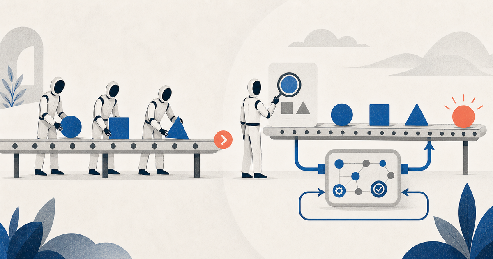
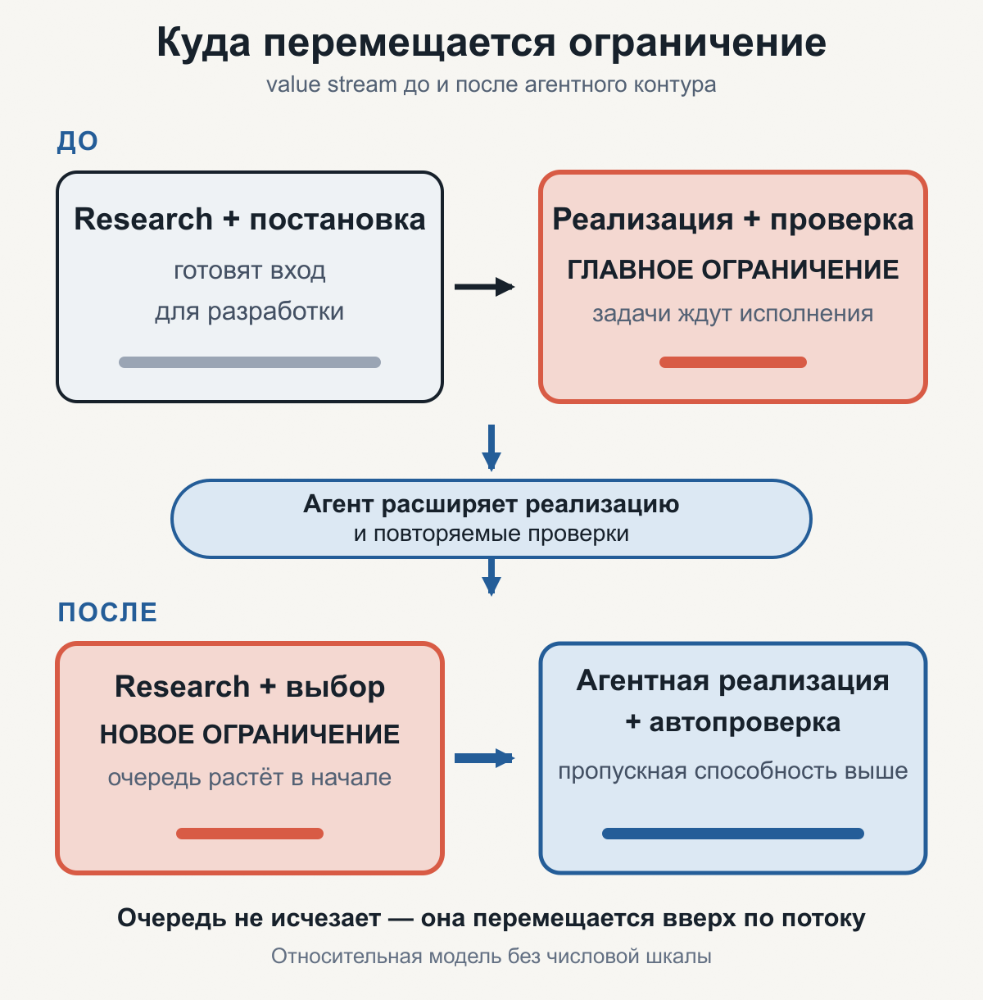
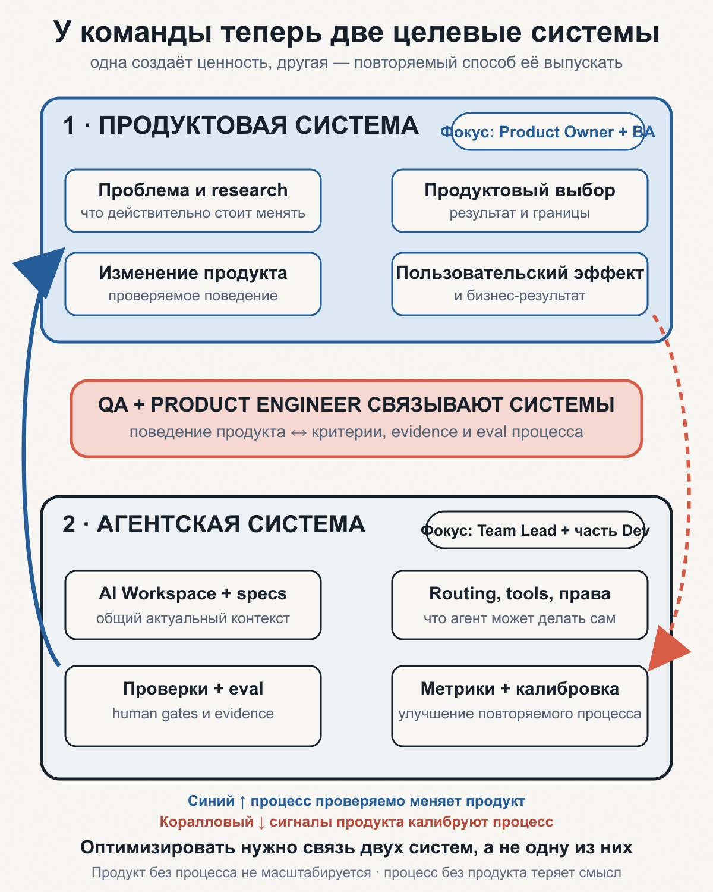
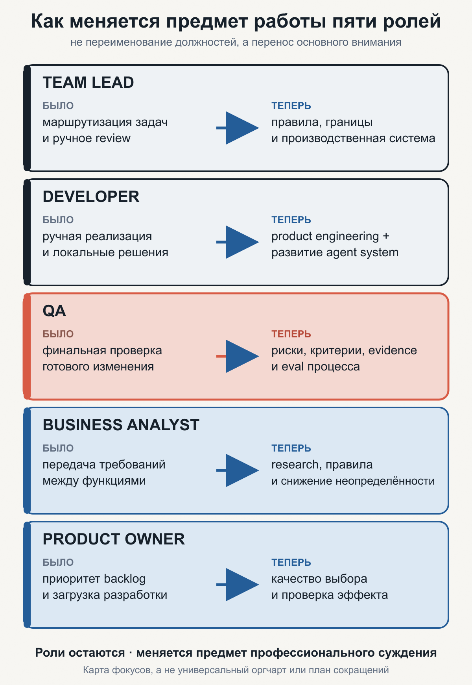

Как меняются роли в команде при внедрении агентной разработки
Когда реализация ускоряется сильнее, чем продуктовые решения, разработка перестаёт быть единственным центром команды. Людям приходится одновременно развивать продукт и систему, которая этот продукт производит.

Первый вопрос о ролях обычно звучит так: кого теперь станет меньше — разработчиков или тестировщиков? Это преждевременный вопрос. Агентная разработка сначала меняет не штатное расписание, а распределение внимания.
Реализация и часть проверок могут ускориться намного сильнее, чем исследование проблемы, выбор продуктового решения и формулировка требований. Тогда очередь не исчезает. Она перемещается в начало потока: команде не хватает не рук, которые пишут код, а достаточно хорошо исследованных и выбранных изменений.
Одновременно возникает новая работа. Кто-то должен развивать не только продукт, но и агентскую систему разработки: общий контекст, спецификации, инструменты, права, проверки, контрольные точки человека (human gates) и метрики. Команда больше не может управлять только продуктом: объектами осознанного изменения становятся две связанные системы.
Обещание статьи: дать руководителю модель, по которой можно увидеть этот сдвиг, переопределить фокус Team Lead, Developer, QA, Business Analyst и Product Owner и не спутать рост активности с ростом ценности.
Ускоряется не вся цепочка
В упрощённом виде обычный поток выглядит так:
проблема → исследование → решение → спецификация → реализация → проверка → релиз
В классической небольшой команде очередь часто скапливается перед разработкой и тестированием. У Product Owner уже есть следующий набор желаний, аналитик подготовил требования, но разработчики заняты предыдущими задачами, а готовые изменения ждут проверки.
Агентный контур расширяет прежде всего правую часть потока. Агент читает код, вносит изменения, запускает тесты, проводит первичное ревью и собирает доказательства. Это не делает реализацию мгновенной и безошибочной, но при хорошем контексте и проверках заметно увеличивает её пропускную способность.
Левая часть ускоряется не обязательно. Чтобы решить, какую проблему брать, по-прежнему нужно разговаривать с пользователями, разбирать данные, понимать ограничения бизнеса и выбирать между конкурирующими возможностями. AI помогает исследовать и оформлять материал, но право выбора и цена ошибки остаются у людей.

Здесь важно не сделать ложный вывод: «раз код теперь дешёвый, нужно генерировать больше фич». Быстрая реализация удешевляет проверку гипотез, но не превращает любую идею в хорошее вложение. Наоборот, стоимость плохого продуктового выбора становится заметнее: команда способна быстрее произвести больше ненужного.
Мой вывод из этого наблюдения: высвободившееся внимание следует направлять не на раздувание backlog, а на улучшение качества входа:
- исследовать проблему до выбора решения;
- отделять пользовательскую потребность от понравившейся реализации;
- формулировать ожидаемый результат и ограничения;
- заранее определять, каким наблюдением будет подтверждена польза;
- отказываться от слабых идей до того, как их быстро реализует агент.
Вместо одной целевой системы — две
Под целевой системой я здесь понимаю систему, состояние которой команда намеренно изменяет и за результат которой отвечает. Это рабочий термин статьи, а не претензия на отраслевой стандарт.
До внедрения агентной разработки внимание инженерной команды почти целиком направлено на продуктовую систему: её архитектуру, код, поведение, надёжность и выпуск. Инструменты разработки важны, но обычно остаются инфраструктурой на периферии.
После внедрения появляется вторая полноценная целевая система — агентская система разработки. В неё входят:
- AI Workspace или другой общий контекст продукта, архитектуры и решений;
- правила маршрутизации задач и границы автономии;
- шаблоны brief, спецификаций и критериев приёмки;
- инструменты и доступы, которыми может пользоваться агент;
- автоматические проверки и оценочные прогоны (
eval); - точки, где решение обязан принять человек;
- наблюдаемость, стоимость, метрики качества и цикл калибровки.
Это не один бот и не набор удачных промптов. Это производственная система, через которую изменения проходят от постановки до проверенного результата.

Две системы требуют разных вопросов.
Для продукта:
- чью проблему мы решаем;
- почему она важнее альтернатив;
- какое изменение поведения или результата ожидаем;
- как узнаем, что решение сработало.
Для агентской системы:
- какой контекст нужен для корректного изменения;
- что агент может делать сам;
- какими проверками подтверждается результат;
- где процесс ломается, дорожает или требует лишнего участия человека;
- какое улучшение сделать повторяемой частью системы.
Если заниматься только продуктом, агентный процесс остаётся набором личных трюков и постепенно деградирует. Если заниматься только агентской системой, легко построить красивый внутренний конвейер, который быстрее выпускает неважные изменения. Эти две системы должны быть связаны, но не смешаны.
Короткий словарь
- AI Workspace — принадлежащий проекту общий контекст: цели, решения, архитектура, правила и актуальные рабочие артефакты, из которых агент получает нужный контекст.
- Human gate — точка, в которой процесс обязан остановиться и передать решение человеку из-за риска, цены или необратимости.
- Eval — повторяемый прогон процесса на заранее выбранных примерах, позволяющий сравнить качество до и после изменения.
- Verification loop — цикл, в котором агент выполняет проверку, разбирает результат, исправляет работу и снова проверяет её до заданного условия остановки.
- Lead time — полное время прохождения задачи от выбранной стартовой точки до результата, включая ожидание в очередях.
Роли не исчезают — меняется их предмет работы
Анализ, проектирование, реализация и проверка никуда не деваются. Меняется доля ручного исполнения и место, где профессиональное суждение человека приносит наибольшую пользу.
Поэтому фраза «разработчики и тестировщики становятся бизнес-аналитиками» полезна только как провокация. Буквально превращать всех в одну профессию не нужно. Точнее сказать так: часть работы смещается вверх по потоку, а часть — на развитие агентской производственной системы.

Product Owner: от наполнения backlog к качеству выбора
Когда реализация была дефицитом, одна из задач Product Owner состояла в том, чтобы держать разработку занятой и поддерживать упорядоченную очередь. При высокой пропускной способности реализации сама полнота backlog перестаёт быть достоинством.
Новый центр тяжести Product Owner:
- сформулировать проблему и ожидаемый бизнес-результат;
- обеспечить доступ к пользователям, данным и доменной экспертизе;
- сравнить альтернативы, включая решение «не разрабатывать»;
- ограничить одновременно запущенные гипотезы;
- закрыть цикл после релиза и проверить, появился ли ожидаемый эффект.
В этой модели Product Owner перестаёт быть поставщиком задач для фабрики кода. Его дефицитный результат — обоснованный выбор, а не количество карточек.
Business Analyst: от перевода между отделами к устранению неопределённости
Если аналитик лишь переписывает пожелание бизнеса в формат, удобный разработчику, агент способен ускорить эту механическую часть. Но сильный бизнес-анализ начинается раньше текста требования.
Он включает:
- исследование текущего процесса и настоящей проблемы;
- выявление акторов, целей, правил, исключений и ограничений;
- согласование терминов и границ системы;
- превращение неявных договорённостей в проверяемые примеры;
- сохранение связи между проблемой, решением, критериями и результатом после релиза.
У аналитика становится меньше ценности в роли «почтового сервера» между бизнесом и разработкой и больше — в роли человека, который уменьшает неопределённость до того, как она размножится в коде.
QA: от последнего шлюза к проектированию доказательств
Роль QA особенно легко объявить исчезающей: агент пишет тесты, запускает их и сам исправляет замечания. Но автоматизация исполнения теста не отвечает на главный вопрос — доказываем ли мы нужное свойство системы.
Фокус QA смещается:
- из конца потока — в discovery и формулировку acceptance criteria;
- от повторения сценариев — к моделированию рисков и пограничных случаев;
- от отчёта «тесты зелёные» — к качеству набора доказательств;
- от проверки только продукта — к eval агентского процесса;
- от ручного поиска каждой регрессии — к проектированию контуров, которые ловят класс ошибок повторяемо.
QA остаётся нужен там, где важны исследовательское тестирование, человеческое восприятие, сложные интеграции, безопасность и высокая цена ошибки. Но его сильнейший вклад всё чаще появляется до реализации и в устройстве verification loop, а не только после готового кода.
Developer: от набора кода к инженерии двух систем
Разработчик не перестаёт быть инженером продукта. Чтобы оценить план, увидеть опасную абстракцию, принять архитектурное решение и разобрать сбой агента, нужно понимать код и среду исполнения.
Но ручной набор каждой строки перестаёт быть главным способом проявления этой экспертизы. Возникают два пересекающихся фокуса:
- Product engineering: прояснить технические ограничения, выбрать решение, направить агента, проверить архитектурную целостность и принять изменение.
- Agent system engineering: улучшать AI Workspace, инструменты, skills, контекст, тестовые контуры, права, наблюдаемость и способы восстановления после ошибок.
В маленькой команде один человек может чередовать эти фокусы. В более зрелой часть разработчиков может временно или постоянно отвечать за агентскую систему, а остальные использовать её для продуктовых изменений. Это не универсальная пропорция и не совет оставить «одного разработчика». Распределение определяется очередями, риском и фактической нагрузкой.
Team Lead: от диспетчера задач к владельцу производственной системы
В ручном процессе Team Lead часто становится точкой маршрутизации: раздать задачи, объяснить контекст, проверить дизайн, провести code review и разблокировать релиз. Если агенты увеличивают число параллельных изменений, попытка сохранить все эти решения у одного человека превращает его в новое узкое место.
Новый фокус Team Lead — сделать качество процесса свойством системы:
- определить классы задач и допустимую автономию;
- закрепить архитектурные инварианты и технические ограничения;
- обеспечить актуальность общего контекста;
- спроектировать human gates по цене и обратимости решения;
- следить за очередями, повторными правками, дефектами и нагрузкой на людей;
- выбирать улучшения агентской системы, которые устраняют повторяющиеся сбои;
- сохранять инженерную способность команды понимать продукт, а не только управлять агентами.
В зрелом агентном контуре Team Lead меньше управляет каждой операцией и больше отвечает за среду, в которой правильные операции воспроизводятся.
Один пример: функция выгрузки в CSV
Ниже — гипотетический пример, а не доказательство эффективности модели. Он нужен, чтобы показать изменение работы на одной и той же задаче.
Команда хочет добавить выгрузку счетов в CSV. В привычном потоке Product Owner создаёт задачу, Business Analyst описывает поля, Team Lead назначает разработчика, Developer пишет код, а QA проверяет готовую функцию. Главные передачи происходят между ролями, а самые длинные этапы — реализация и финальная проверка.
В агентном потоке роли не исчезают, но входят в работу иначе:
- Product Owner уточняет, кто и для какого решения использует выгрузку. Возможно, пользователю нужен не файл как таковой, а способ сверить счета с бухгалтерией.
- Business Analyst исследует форматы, права, валюты, кодировку, дубли и ограничения объёма. Неизвестные правила становятся открытыми вопросами, а не догадками агента.
- QA до реализации формулирует примеры: пустая выборка, недостаточные права, специальные символы, большой объём и повторная выгрузка. Эти примеры задают, что нужно доказать.
- Developer выбирает техническую границу решения, проверяет затрагиваемые контракты и даёт агенту достаточный контекст. Агент меняет код, пишет проверки и собирает evidence.
- Team Lead не перечитывает вручную каждый шаг. Он смотрит, где процесс потребовал лишнего вмешательства. Если агент второй раз ошибся с правами или кодировкой, правило, проверка или шаблон спецификации улучшаются для следующих задач.
Продуктовый результат здесь — полезная и корректная выгрузка. Результат агентской системы — процесс, который в следующий раз надёжнее обрабатывает права, форматы и проверку данных. Одна задача улучшает обе целевые системы.
Кто владеет двумя системами
Новая модель не требует немедленно вводить должность «директор по агентам». Она требует сделать ответственность видимой.
Рабочее распределение внимания может выглядеть так:
Прокрутите таблицу вправо →
| Роль | Основной объект внимания | Что связывает две системы |
|---|---|---|
| Product Owner | продукт, пользовательский и бизнес-результат | приоритет и решение продолжать, изменить или остановить гипотезу |
| Business Analyst | проблема, правила, ограничения и спецификация | трассируемая связь от потребности до проверяемого поведения |
| QA | риск и доказательства качества | критерии, eval и сигнал о том, где ошибается продукт или процесс |
| Developer | техническое решение и агентский способ его получить | архитектура, инструменты, контекст и разбор нештатных случаев |
| Team Lead | производственная система команды | границы автономии, качество потока, развитие инженерных практик |
Это карта фокусов, а не жёсткие границы. На discovery разработчик может обнаружить техническую возможность, QA — критический бизнес-риск, а аналитик — дефект в текущем процессе. Важно не защищать территорию должности, а понимать, какой результат должен появиться и кто имеет право принять необратимое решение.
Полезно вести два явных контура работы.
Контур продукта:
сигнал → исследование → выбор → спецификация → релиз → проверка эффекта
Контур агентской системы:
сбой или лишняя ручная работа → диагностика причины
→ изменение контекста, инструмента или проверки
→ eval → выпуск улучшенного процесса → наблюдение
Если второй контур не имеет владельца и регулярного времени, команда каждый раз исправляет симптомы вручную. Если он оторван от первого, внутренний инструментарий начинает развиваться ради собственной сложности.
Как понять, что изменилось на самом деле
Количество сгенерированного кода плохо отвечает на этот вопрос. Число PR тоже легко вводит в заблуждение.
В одном из контуров, за которым я наблюдал, число PR после внедрения агентной разработки стало примерно в десять раз выше прежнего. Но задачи одновременно стали декомпозироваться на более мелкие изменения. Поэтому это наблюдение показывает рост активности потока, но само по себе не доказывает десятикратный рост производительности или ценности. Это авторский кейс, а не независимое исследование.
Нужен набор метрик для обеих целевых систем.
1. Результат продукта
Выберите показатель, связанный с причиной изменения: использование функции, конверсию, выручку, экономию, время операции, обращения в поддержку или другой наблюдаемый результат. Универсальной продуктовой метрики нет.
2. Поток работы
- полное время прохождения задачи (
lead time) от выбранного момента до релиза; - возраст очереди на каждом этапе;
- время ожидания и активной работы;
- объём незавершённой работы;
- частота релизов при сопоставимом размере изменений.
Эти показатели помогают увидеть, куда переместилось ограничение. Если очередь растёт перед research, не нужно ещё сильнее ускорять генерацию кода.
3. Качество результата
- дефекты после релиза;
- откаты и неуспешные изменения;
- число повторных правок до принятия;
- инциденты и время восстановления;
- доля acceptance criteria, подтверждённых воспроизводимыми проверками.
Скорость без качества лишь быстрее переносит стоимость на эксплуатацию.
4. Качество агентской системы
- доля задач с проверяемыми критериями до реализации;
- доля задач, где агент сам прошёл verification loop;
- причины и частота human intervention;
- время ревью и нагрузка на Team Lead;
- стоимость принятого изменения, а не стоимость одного запуска модели;
- повторяемые классы сбоев и результат их калибровки.
Это рабочий набор, а не отраслевой стандарт. Команде нужно выбрать несколько показателей под конкретный пилот, снять исходный уровень (baseline) и заранее определить плохой исход, при котором процесс будет остановлен или пересобран.
Четыре ошибки при перераспределении ролей
1. Объявить новое устройство раньше фактического ускорения
Если агент требует постоянного сопровождения, тесты нестабильны, контекст устарел, а Team Lead вручную спасает каждый PR, реализация ещё не стала широкой частью потока. Нельзя переносить людей из разработки и QA на основании демонстрации. Сначала нужен повторяемый процесс и данные.
2. Превратить всю команду в фабрику требований
Больше внимания к началу потока не означает больше документов и карточек. Цель research и анализа — отсеивать слабые решения, а не кормить быстрый конвейер. Хороший результат часто выглядит как закрытая гипотеза без написанного кода.
3. Отделить разработчиков агентской системы от продукта
Внутренняя платформа быстро теряет связь с реальностью, если её владельцы не видят задачи, ошибки и продуктовые ограничения. Улучшения agent system должны исходить из повторяющихся сбоев рабочего потока и проверяться на нём.
4. Считать, что новая очередь всегда появится в требованиях
Она может возникнуть в согласовании безопасности, deployment, эксплуатации, поддержке, продажах или доступе к пользователям. Модель предсказывает перемещение ограничения, но не знает его место заранее. Его нужно находить по очередям и задержкам конкретной команды.
Когда вывод о ролях применять рано
Эта модель имеет ограничения.
- В safety-critical и регулируемых системах объём независимой проверки может не уменьшиться, даже если тесты генерируются быстрее.
- В legacy-проекте без актуального контекста агент может увеличить нагрузку на разработчиков и QA, а не освободить её.
- Если продуктовые решения уже хорошо исследованы, новым ограничением может стать инфраструктура, release governance или эксплуатация.
- Если команда не имеет доступа к пользователям и данным, перевод инженеров «в research» сам по себе не создаст продуктового знания.
- Если измеряется только локальная скорость кода, перераспределение ролей будет оптимизировать часть процесса в ущерб целому.
Поэтому начинать стоит не с переименования должностей, а с карты потока: где накапливается очередь, какая работа повторяется, какие решения нельзя делегировать и какая из двух систем сейчас ограничивает результат.
Главный сдвиг
Агентная разработка не отменяет продуктовую, аналитическую, инженерную и тестовую компетенции. Она меняет место их приложения.
Product Owner и Business Analyst тратят больше внимания на проблему, выбор и проверку эффекта. QA проектирует риски и доказательства раньше. Developer работает не только с кодом продукта, но и со средой, которая этот код меняет. Team Lead превращает личное управление каждой задачей в правила и обратные связи производственной системы.
Команда больше не может смотреть только на продукт. У неё две целевые системы:
- продукт, который создаёт ценность для пользователя и бизнеса;
- агентская система разработки, которая должна выпускать изменения предсказуемо, проверяемо и с приемлемой стоимостью.
Именно поэтому главный вопрос после внедрения звучит не «какая роль теперь не нужна?», а иначе:
Куда переместилось ограничение и кто теперь отвечает за улучшение каждой из двух систем?
С этого вопроса начинается реальное перераспределение ролей — без магических коэффициентов, преждевременных сокращений и цифровой копии старой оргструктуры.
Связанная авторская позиция: «Не нанимайте AI-агентов на человеческие должности» — о том, почему агентный процесс нужно проектировать вокруг проверяемого результата, а не вокруг виртуальных должностей.